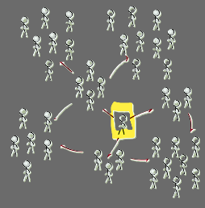
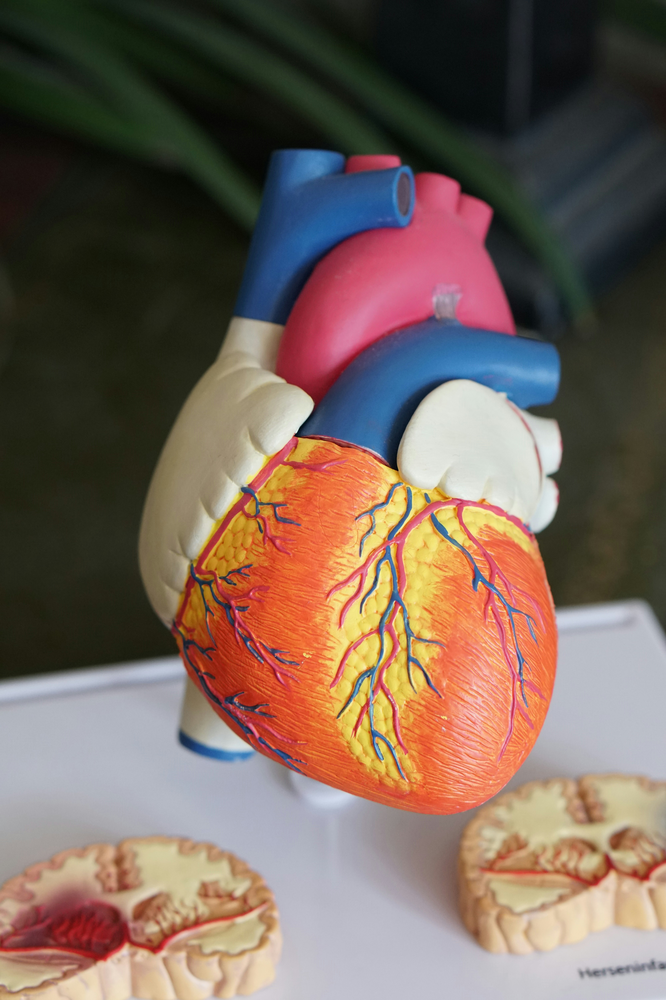

Featured Projects
- All
- Data Analytics
- Academic
- Research

University Reporting Audit Project
Built a mock institutional reporting audit workflow to check missing values, duplicates, inconsistent records, and reporting accuracy using SQL, Python, and Excel-style validation.

Supply Chain Inventory Analysis
Analyzed inventory, vendor, and materials data to identify duplicate items, stock risks, and opportunities for reporting improvement.

Viral Cascade Prediction
Developed machine learning models to predict viral cascades in malicious dark web forum threads using PostgreSQL, graph-based features, and classification techniques.

Obesity Classification
Implemented machine learning models to classify obesity levels using health and lifestyle data, with a focus on preprocessing, model comparison, and prediction accuracy.

Autonomous Vehicle
Worked on road segmentation and perception research using Python, ROS2, and deep learning models for autonomous vehicle applications.
AI Mini Problems
Solved classic AI problems including 4-in-a-Line, 8-Puzzle Solver, and N-Queens using search algorithms and problem-solving techniques.

KnowItAll App
Built an ingredient scanning app to support dietary, religious, and health-conscious choices through text processing and application development.

Software Engineering Projects
Collection of projects demonstrating software development, application design, and implementation of programming concepts.
Facial Expression Recognition
Built CNN-based deep learning models to classify facial expressions using spatial feature extraction, data augmentation, and PyTorch model training.